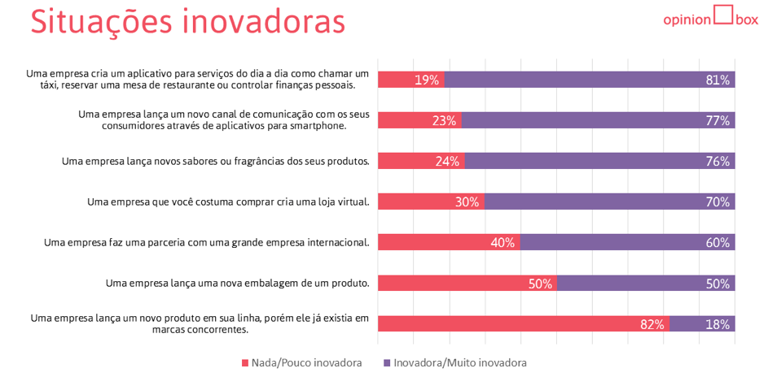

EMPREENDEDORISMO E INOVAÇÃO
Unidade 1 | Aula 2

Disciplina | Empreendedorismo e Inovação

Apresentar as formas de inovação e as ferramentas metodológicas que facilitam o desenvolvimento do processo inovador.

Inovação de ruptura, inovação incremental, Processo criativo.
Antes de iniciarmos nossa aula, é importante você assistir a este vídeo sobre o que é Inovação.
Gabriel Goffi é CEO de uma startup no mercado digital na área de educação, a High Stakes Academy.
Pensando no vídeo acima, reflita: você está preparado para esse cenário de constante inovação?
Para te auxiliar nesta resposta, vamos aprofundar um pouco mais sobre esse tema. Lembrando que quanto mais inovador um projeto, mais arriscado ele será. Por isso, saber lidar com riscos é uma das habilidades necessárias para empreender no século XXI.
De acordo com Gabriela Possolli (2012) o conceito de inovação pode estar vinculado as novas modelagens de negócio, envolvendo novos mercados, métodos, processos organizacionais, produtos e serviços.
Contudo, a própria autora ressalta que para um destes elementos serem considerados como inovador por excelência é necessário que esse processo altere significativamente o modus operandi sendo que essa mudança deve ser duradoura e irregressível.
Modus operandi é uma expressão em latim que significa "modo de operação". Utilizada para designar uma maneira de agir, operar ou executar uma atividade seguindo geralmente os mesmos procedimentos.
Fonte: https://www.significados.com.br/
A inovação não é apenas o lançamento de algo novo, mas sim, de algo que transforme a realidade de todos os envolvidos.
Por exemplo, em uma pesquisa realizada pela empresa Opinion Box, buscou mensurar a percepção das pessoas em relação ao que consideram como inovador. O resultado pode ser observado no gráfico abaixo:
Fonte: Opinion Box.
Perceba que são mais consideradas como inovadoras ações que facilitem o dia a dia das pessoas e que tragam vantagens aos clientes.
Consequentemente, esse benéfico também promove uma vantagem competitiva para a própria empresa. Conceitualmente, podemos dividir o processo de inovação em duas formas: inovação radical (ou de ruptura) e inovação incremental. E muito é importante compreender esta distinção.
Na aula anterior, estudamos sobre o conceito de Tecnologia Disruptiva e podemos entender que ela faz parte do processo de inovação. Porém é um tipo de inovação muito particular pois quebra uma série de paradigmas.
Podemos citar o Skype, Apple, NetFlix como empresas de inovação radical.
A partir do momento em que essas empresas lançaram seus produtos ou serviço a forma como a sociedade e algumas empresas operavam foi drasticamente alterada.
Para citar um exemplo: a partir do momento em que a NetFlix lançou seu serviço de streaming o modo de como assistimos um filme foi drasticamente alterado.
Houve um impacto direto nas vídeo locadoras (agora praticamente extintas) e também nas empresas de TV aberta e TV a cabo.
Podemos dizer que ocorreu uma ruptura no antigo modo de ver um filme que levou empresas que operavam nesta a também buscarem uma inovação. Caso contrário, iriam a falência por não se enquadrarem mais no mercado.
Essa é uma caraterística importante inovação de ruptura, pois ela tem grande capacidade de deixar obsoleto o modus operandi anterior. Veja só:
Você ainda aluga DVD para assistir em casa?
Por isso, iniciamos essa aula com o vídeo a Inovação Não Tem Dó.
Você pode estar pensando agora que a inovação pode impactar também diretamente seus estudos e seu emprego. Estudar online como você faz agora é uma forma de inovação de ruptura.
E seu emprego?
Será que ele existirá em alguns próximo anos?
Ou ele não existirá devido a uma inovação disruptiva?
Inovação Incremental é um tipo de inovação mais paulatina que busca o aperfeiçoamento de uma tecnologia.
Ao contrário da inovação de ruptura, a inovação de incremental não rompe com um modus operandi anterior, mas promove ganhos de funcionalidade, eficiência e desempenho em tecnologias anteriores.
Podemos pensar no caso do I-Phone.
O CEO da Apple, Tim Cook, anuncia o novo iPhone 11. (Foto: Divulgação)
Certamente o surgimento do Smartphone foi uma inovação de ruptura, pois alterou a forma com que a sociedade usava um telefone.
Atualmente, podemos fazer diversas atividades por meio de um Smartphone, sendo que a atividade de telefonar deixou de ser sua principal função.
O celular em um pequeno espaço físico foi capaz de reunir diversas tecnologias que usávamos isoladamente anos atrás, como a TV, Computador, Fax e Videogame.
ATENTE-SE AO FATO DE QUE já estamos inseridos neste novo paradigma e portanto, os novos lançamentos da Apple, da Samsung e de outras empresas de telefonia celular são inovações incrementais. Não são menos importantes, pois também fazem parte de uma busca contínua pela melhoria dos serviços prestados por uma empresa.
Não há uma receita mágica para se dar bem no processo de inovação. A inovação pode acontecer a partir de uma discussão de ideais ou até mesmo de projetos fracassados.
Estar atento às transformações no mundo como um todo é fundamental para vislumbrar uma oportunidade de inovação.
Além disso, algumas metodologias podem ajudar a você desenvolver uma mente criativa e aberta para o processo de inovação. Essa será sua atividade desta aula.
POSSOLLLI, Gabriela Eyng. Gestão da inovação e do conhecimento. Curitiba: InterSaberes, 2012.
Sugerimos que você mantenha um caderno com anotações manuscritas baseadas no material didático.
QUE TAL APLICAR O QUE APRENDEU?
Na aula passada, você pensou sobre um tipo de tecnologia que seria inovadora. Agora, discuta sobre essa ideia com seus amigos. Uma técnica que pode te ajudar neste projeto é a metodologia Designer Thinking. Veja no vídeo abaixo como usar esse método:
Também faça junto com seus amigos um Brainstorming sobre a viabilidade se seus projetos. Não sabe conduzir um Brainstorming? Não há problemas!
No vídeo abaixo é possível conferir os 5 passos para fazer um Brainstorming.
Guarde todas as ideias e informações que foram discutidas em um documento de texto, pois em breve ele será usado para construir seu projeto. Participe também do nosso Fórum de discussão sobre Inovação. Quanto mais participações, mais boas ideias podem surgir.
Copyright©2021, Faculdade OPEN. Todos os direitos reservados.
É proibida a reprodução e distribuição total ou parcial deste material, com ou sem fins lucrativos, em qualquer meio, sem prévia autorização.